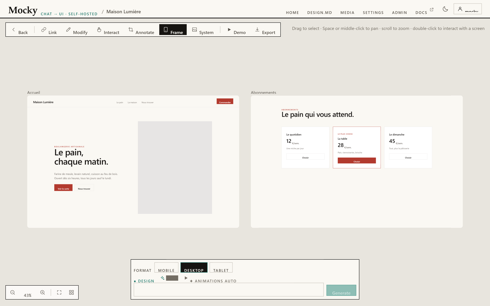

Maquette de Lumy. Seule la page « Démarrage » est construite ; l’assistant et les retours montrent des exemples.Lumy mock-up. Only the “Getting started” page is built; the assistant and feedback show examples.
Chaque doc choisit ses langues dans sa configuration. Vous restez sur la même page en changeant.Each site picks its own languages in its configuration. Switching keeps you on the same page.
Démarrer
Démarrage
Installer Mocky, créer le premier compte et générer un premier écran.
6 min de lectureMis à jour le 28 sept. 2026
La version anglaise a changé depuis cette traduction. Anglais modifié le 26 sept., traduction du 12 sept. exemple
Prérequis
Docker, ou Node ≥ 22.12. Le fichier .nvmrc fixe la version 22.12, celle qu’utilise l’image node:22-slim. Il n’y a ni base de données, ni module natif à compiler.
ffmpeg est le seul binaire externe, et il ne sert qu’à la vidéo au défilement. Sans lui, tout le reste fonctionne, et cette fonctionnalité se déclare indisponible au lieu d’échouer.
Installation
Choisissez comment lancer Mocky.
Choix retenu sur tout le site
Terminal
git clone https://github.com/PetitOursManu/Mocky.git
cd Mocky
docker compose up -d --build
Mocky écoute sur http://localhost:8787. Les comptes, les projets, les images et les séquences vidéo sont conservés dans le volume mocky-data.
Terminal
npm install
npm run dev:all
Puis ouvrez http://localhost:5173.
Utilisez dev:all, pas dev. npm run dev ne lance que le serveur web, sans le back-end : la boîte de connexion annoncera qu’elle ne peut pas le joindre.
Terminal
npm run build # tsc && vite build → dist/npm start # Express sert dist/, l’API et le proxy sur :8787
npm start sans npm run build démarre bien, mais chaque page est un 404 nu. Le serveur affiche un avertissement.
Pourquoi c’est ainsiPourquoi le port n’est-il publié que sur 127.0.0.1 ?
Plusieurs routes dépensent vos crédits de modèle : l’instance n’est donc pas joignable depuis le réseau tant que vous ne l’avez pas demandé. Pour l’exposer volontairement, mettez MOCKY_BIND=0.0.0.0 dans .env, après avoir lu la section reverse proxy de Déploiement. La configuration recommandée reste de garder 127.0.0.1 et de laisser le proxy joindre Mocky en local.
Vérifier l’installation
Vos valeursLes commandes de cette page s’adaptent à ce que vous saisissez.
Le serveur répond sur sa route de santé :
Terminal
curl-slocalhost:8787/api/health
Ouvrez ensuite http://localhost:8787 dans votre navigateur. Si l’interface n’a pas été compilée, /api/health répond 503 avec frontendBuilt: false : c’est ce que lit la sonde de santé du conteneur.
Première utilisation
Cochez chaque étape terminée
0 / 4
Ouvrez Mocky
La boîte de connexion apparaît et ne peut pas être fermée. Il n’existe pas de mode anonyme.
Créez le premier compte
Il devient l’administrateur de l’instance. Il n’y a pas de procédure de mot de passe oublié.
Configurez un modèle de texte
Dans Réglages, choisissez Ollama Cloud, gardez l’URL https://ollama.com, collez votre clé d’API, choisissez un modèle et cliquez sur Tester la connexion.
Générez un premier écran
Décrivez-le dans le , en bas du canevas, puis lancez la génération.
Repérer l’interface
Cliquez sur les points numérotés, ou suivez la visite avec Suivant.

1
La barre en haut de chaque page : Accueil, DESIGN.md, Média, Réglages, Admin (visible seulement par les administrateurs) et Docs. Rien ici ne touche au contenu d’un projet.
En haut à gauche du canevas. Lier, Modifier et Annoter changent ce que signifie un clic dans un écran, donc un seul des trois est actif à la fois.
Chaque écran généré est un cadre sur un canevas infini. Glissez pour sélectionner, Espace ou clic molette pour vous déplacer, molette pour zoomer, double-clic pour interagir avec un écran.
La barre flottante du bas. Choisissez le format, les interrupteurs de design, Muse et animations, puis décrivez l’écran à générer.
Tout afficher cadre tous les écrans et continue de le faire tant que vous ne bougez pas la vue. Zoomer sur le dernier écran saute au plus récent.
Une direction par projet
Un projet garde une seule , pour que ses écrans aient l’air d’un produit et non de cinq esquisses. Elle est fixée par le premier écran généré, puis laissée tranquille.
Nouvelle direction est l’exception : cochez-la et la demande que vous vous apprêtez à envoyer réécrit la direction pour tous les écrans suivants. Elle se décoche toute seule une fois cet écran généré.
Tant qu’un projet n’a pas de direction, il se rabat sur . Activez pour qu’il construise la direction artistique à partir de références réelles.
Règles des comptes
Règle
Valeur
Longueur minimale du nom d’utilisateur
3 caractères
Mot de passe à l’inscription publique
8 caractères
Mot de passe créé ou réinitialisé par un admin
8 caractères
Durée d’une session
90 jours, glissante
Limite sur les routes d’authentification
8 essais / min / IP
Les inscriptions publiques se ferment d’elles-mêmes une fois le premier compte créé. Un administrateur les rouvre depuis l’écran Admin pour inviter quelqu’un.
Vérifiez que vous avez compris
Qui devient administrateur d’une nouvelle instance Mocky ?
Exact. Le premier compte devient administrateur, puis les inscriptions publiques se ferment d’elles-mêmes.
Pas tout à fait. Relisez l’étape 2 de « Première utilisation ».
Cette page vous a-t-elle aidé ?
Merci pour votre retour ! (Maquette : rien n’est envoyé.)
Get started
Getting started
Install Mocky, create the first account and generate a first screen.
6 min readUpdated 26 Sept 2026
Requirements
Docker, or Node ≥ 22.12. The .nvmrc file pins 22.12, which is what the node:22-slim image uses. There is no database and no native module to compile.
ffmpeg is the only external binary, and it is used only for scroll-driven video. Without it everything else works, and that one feature reports itself as unavailable rather than failing.
Install
Choose how to run Mocky.
Remembered across the site
Terminal
git clone https://github.com/PetitOursManu/Mocky.git
cd Mocky
docker compose up -d --build
Mocky listens on http://localhost:8787. Accounts, projects, images and video sequences persist in the mocky-data volume.
Terminal
npm install
npm run dev:all
Then open http://localhost:5173.
Use dev:all, not dev. npm run dev starts the web server alone, with no back end, so the sign-in box will report that it cannot reach it.
Terminal
npm run build # tsc && vite build → dist/npm start # Express serves dist/, the API and the proxy on :8787
npm start without npm run build starts successfully, but every page is a bare 404. The server prints a warning.
Why it is this wayWhy is the port published on 127.0.0.1 only?
Several routes spend your model credits, so the instance is not reachable from the network until you say so. To expose it deliberately, set MOCKY_BIND=0.0.0.0 in .env, after reading the reverse proxy section of Deployment. The recommended setup is the opposite: keep 127.0.0.1 and let the proxy reach Mocky over the loopback interface.
Check the install
Your valuesThe commands on this page adapt to what you type.
The server answers on its health route:
Terminal
curl-slocalhost:8787/api/health
Then open http://localhost:8787 in your browser. If the front end was not built, /api/health answers 503 with frontendBuilt: false: that is what the container health check reads.
First run
Tick each step once done
0 / 4
Open Mocky
The sign-in box appears and cannot be dismissed. There is no anonymous mode.
Create the first account
It becomes the instance administrator. There is no password-reset flow.
Configure a text model
In Settings, choose Ollama Cloud, keep the base URL https://ollama.com, paste your API key, pick a model and press Test connection.
Generate a first screen
Describe it in the at the bottom of the canvas, then generate it.
Find your way around
Click the numbered dots, or take the tour with Next.
1
The bar across the top of every route: Home, DESIGN.md, Media, Settings, Admin (shown to administrators only) and Docs. Nothing here touches a project’s contents.
Top-left of the canvas. Link, Modify and Annotate each change what a click inside a screen means, so only one of the three is on at a time.
Every generated screen is a frame on an infinite canvas. Drag to select, Space or middle-click to pan, scroll to zoom, double-click to interact with a screen.
The floating bar at the bottom. Pick the format, the design, Muse and animation switches, then describe the screen to generate.
Fit all frames every screen and keeps doing so until you move the view yourself. Zoom to the latest screen jumps to the most recent one.
One direction per project
A project keeps one , so its screens look like one product rather than five sketches. It is set by the first screen you generate and then left alone.
New direction is the exception: tick it and the prompt you are about to send rewrites the direction for every screen after it. It unticks itself once that screen is generated.
Until a project has a direction, it falls back to . Turn on to have the art direction built from real references.
Account rules
Rule
Value
Minimum username length
3 characters
Password at public sign-up
8 characters
Password created or reset by an admin
8 characters
Session lifetime
90 days, sliding
Auth rate limit
8 tries / min / IP
Public sign-ups close themselves once the first account exists. An administrator reopens them from the Admin screen to invite someone.
Check your understanding
Who becomes the administrator of a new Mocky instance?
Right. The first account becomes the administrator, then public sign-ups close themselves.
Not quite. Read step 2 of “First run” again.
Was this page helpful?
Thanks for your feedback! (Mock-up: nothing is sent.)
Esc
↑↓naviguermove↵ouvriropenTolère les fautes de frappeTypo-tolerant
Lumy fournit un serveur MCP : un assistant IA (Claude, ou tout client compatible) peut lire la doc, écrire des pages et tenir les traductions à jour, en respectant la structure du site.
write_pageCréer ou modifier une page, blocs vérifiés
missing_translationsPages non traduites ou en retard
translate_pagePréparer une traduction à relire
check_linksTrouver les liens et images cassés
Sur une instance hébergée, le serveur MCP distant demande un jeton créé par l’administrateur. La lecture de la doc reste publique, sans compte.
Lumy ships an MCP server: an AI assistant (Claude, or any compatible client) can read the docs, write pages and keep translations current, within the site’s structure.